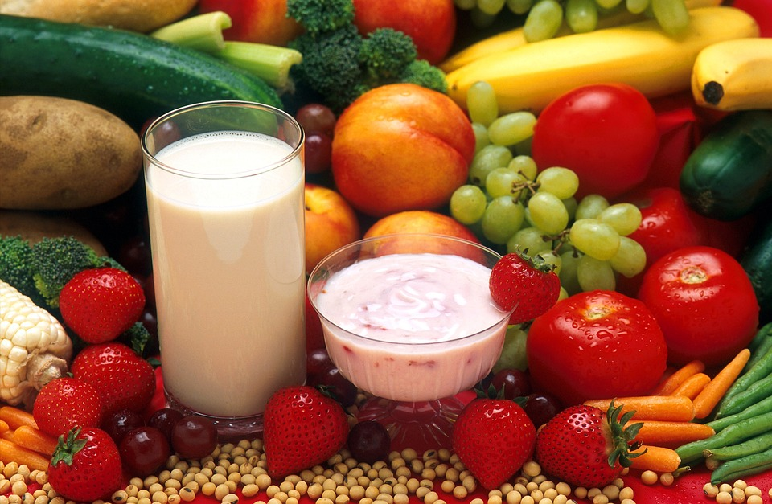
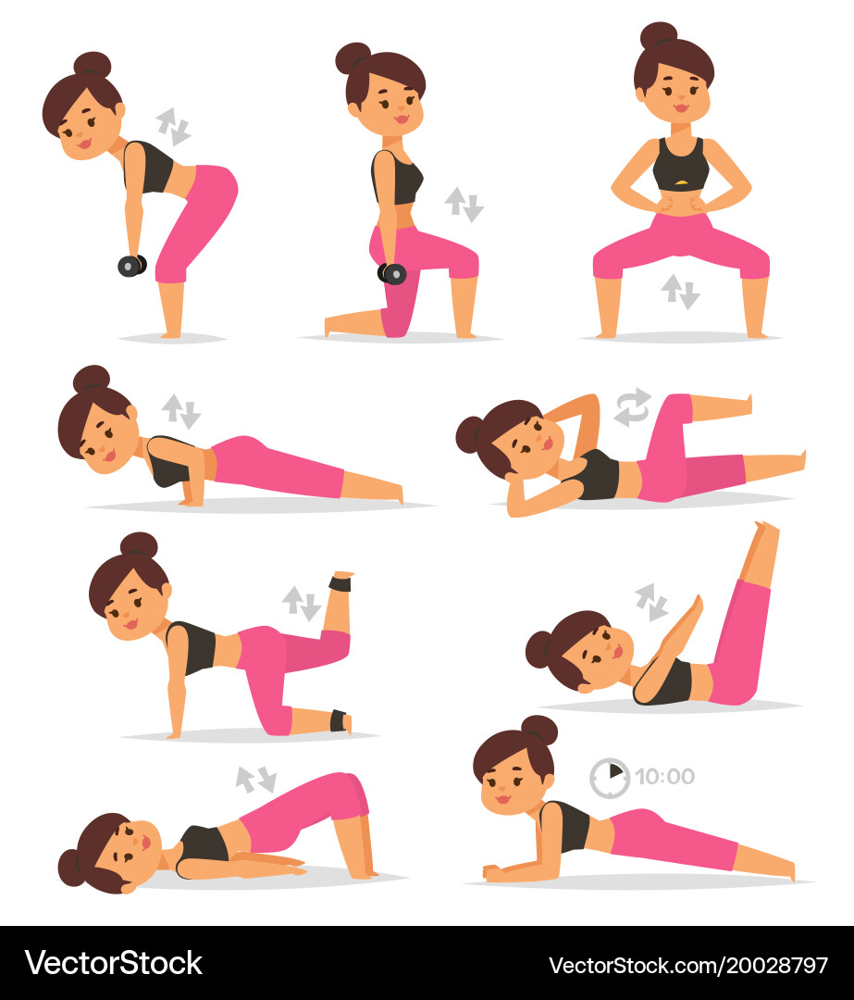
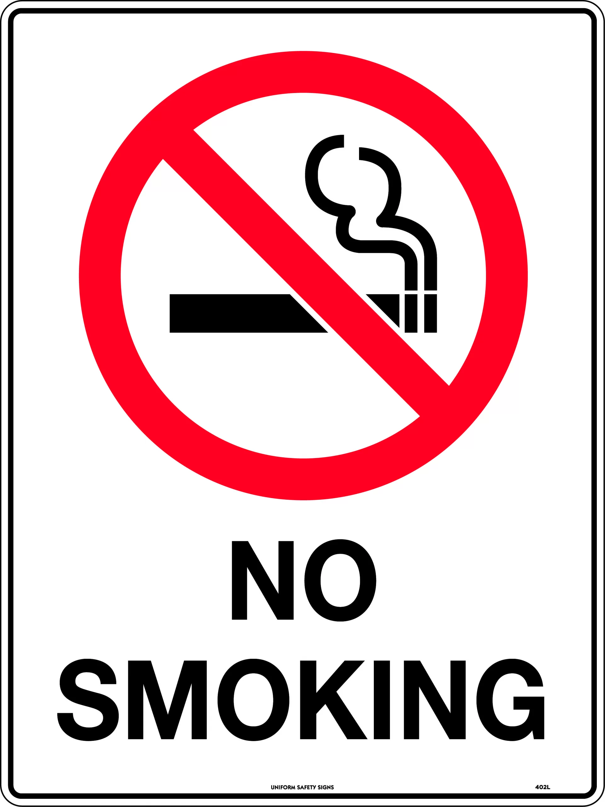
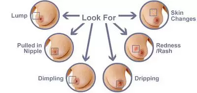
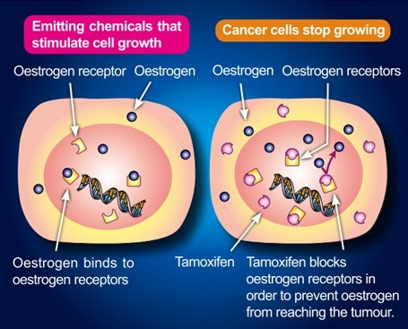

Healthy Diet & Lifestyle
Maintain a healthy diet rich in vegetables, fruits, and whole grains to reduce cancer risk.
Limit processed foods and red meat consumption to prevent obesity-related risks.
Regular Physical Activity
Engage in at least 150 minutes of moderate exercise or 75 minutes of vigorous activity per week.
Exercise helps in maintaining a healthy weight and balancing hormone levels.
Avoid Alcohol & Smoking
Alcohol and smoking are linked to a higher risk of breast cancer. Reducing or eliminating them can be beneficial.
Even passive smoking exposure should be avoided for better health.
Regular Breast Examinations
Perform self-examinations monthly to detect any lumps or abnormalities early.
Schedule regular mammograms and consult a doctor if any unusual changes are noticed.
Manage Stress & Sleep Well
Chronic stress and sleep deprivation can impact overall health and increase cancer risks.
Practice relaxation techniques such as meditation and ensure at least 7-8 hours of sleep daily.
Limit Hormone Therapy
Long-term use of hormone replacement therapy can increase the risk of breast cancer.
Consult a healthcare provider for alternative treatments if required.
